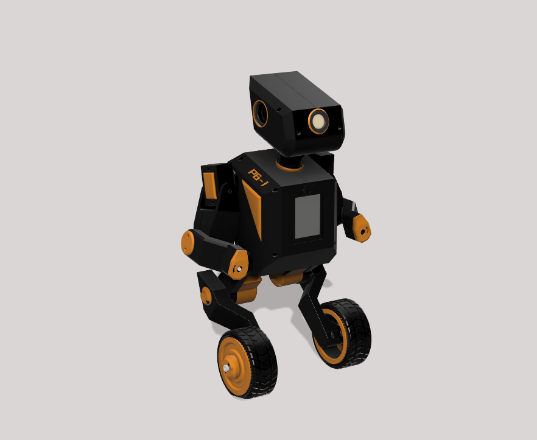
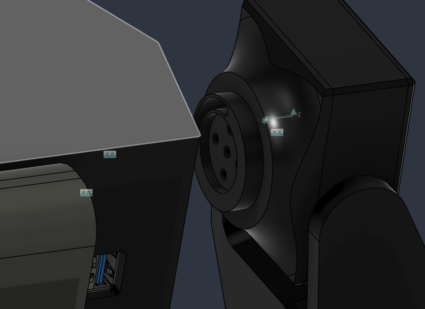
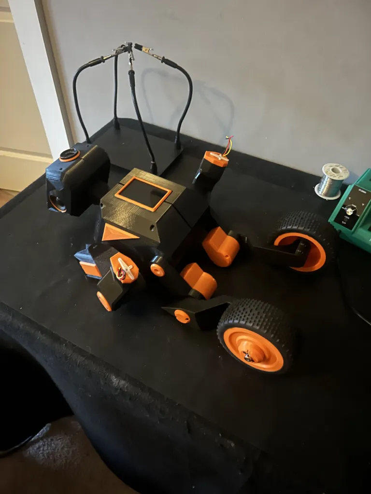
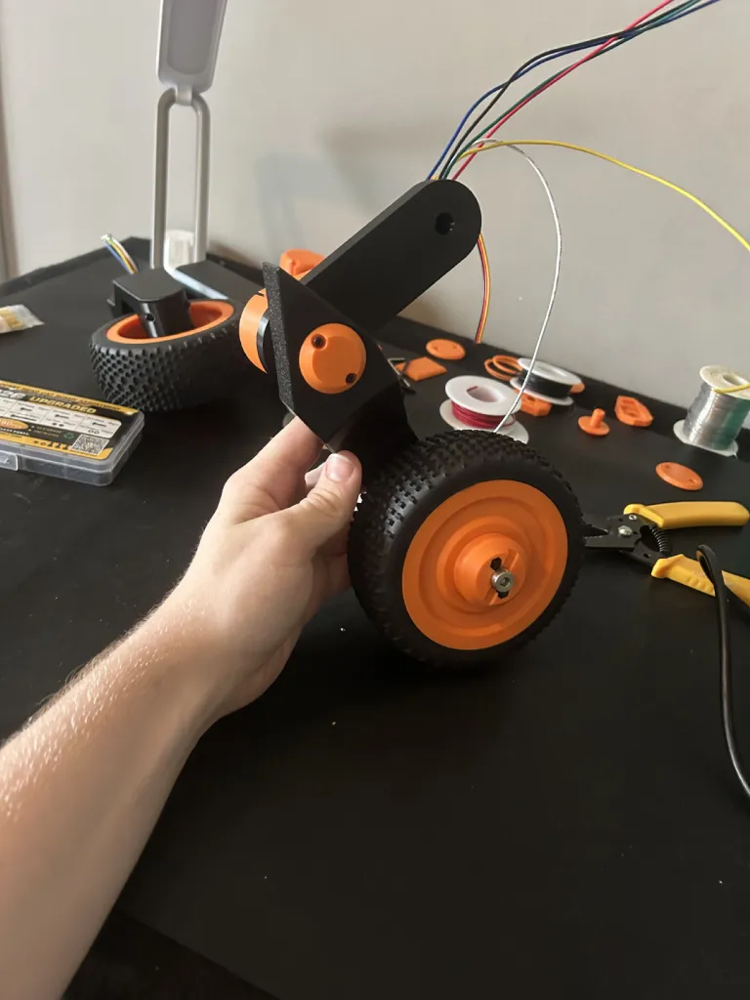
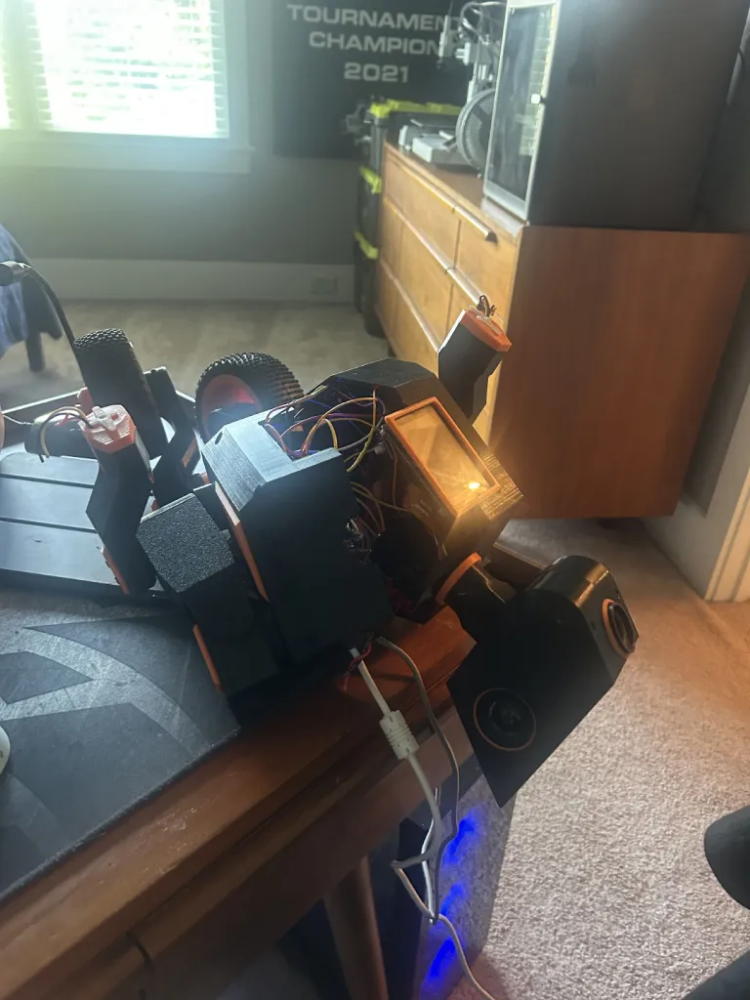
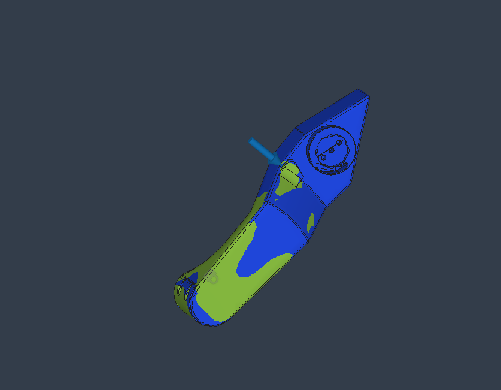
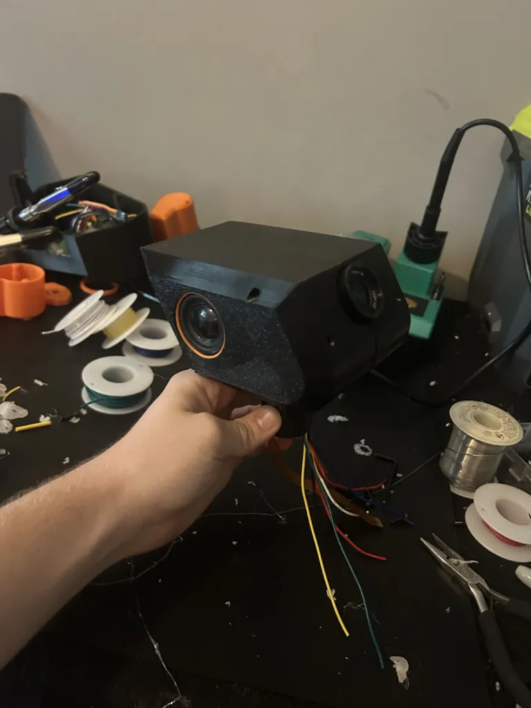
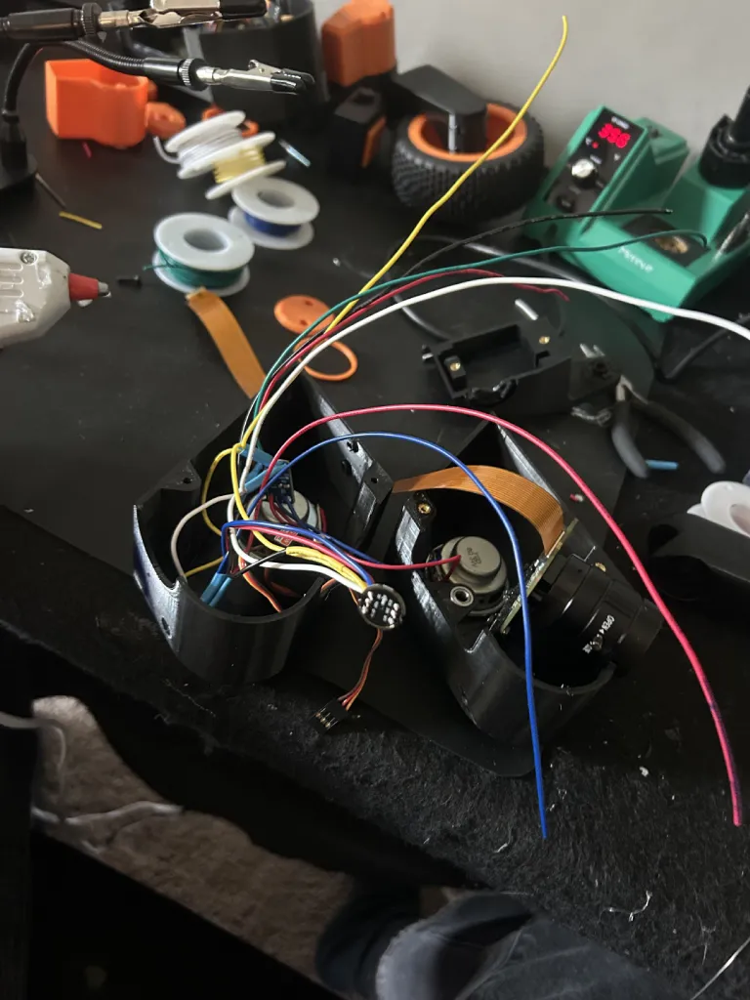

Personal · In bring-up
Bipedal Balancing Robot
A two-wheel dynamically balanced robot with backwards-kneed legs, two arms and a camera head, built to give my desk assistant a body that can follow me around the shop and hand me a tool. Assembled and wired; currently in electrical bring-up.
- Type
- Two-wheel balancer,
articulated legs - Height
- Roughly 1–2 ft
- Mass target
- Under 10 lb
- Structure
- 3D-printed PETG
- Compute
- Pi 5 (8 GB) + RP2040
- Actuation
- 2 × GA25-370 encoded
gear motors, 15 servos - Sensing
- BNO08x IMU · IMX477 ·
2 × INMP441 - Status
- Assembled, bring-up
Why build it
I already had a working voice assistant sitting on my desk. It could hear me, answer, read my calendar and run my lists, and it was permanently stuck on a nightstand. The obvious next question was what it would take to make it get up.
I chose a two-wheel balancer over a walking biped deliberately. Statically stable walking at this scale needs either a lot more actuators or a lot more money, and dynamic balance on two wheels gets me the thing I actually wanted for two motors and a control loop: something that stands at desk height, turns to look at you, and moves across a room. The legs articulate for height and stance, not for gait.

The joint architecture
The default way to build a printed servo robot is to bolt the next link onto the servo horn. It is quick and it is wrong. A horn is a small splined disc designed to transmit torque, not to react bending moments or radial load, and every gram of the limb beyond it ends up cantilevered off a few millimetres of plastic spline and the servo’s output bearing. Splines strip, gear trains wear, and the joint develops slop that no amount of control tuning will fix.
Instead, every joint on this robot is built around a 1.2 in structural ring. The ring is a feature of one part and slots into a matching bore in the mating part, so the two links are located and supported by a large-diameter cylindrical interface. The servo sits inside that interface and does one job: it applies torque. It carries none of the weight.
Three things this buys
- The load path skips the servo. Bending and radial load go ring to shell, through a 30 mm interface instead of a 6 mm spline. The servo only ever sees torque, which is the only thing it is designed to see.
- The joint is a bearing. A long cylindrical fit is self-aligning and resists the coning that makes horn-mounted limbs wobble. Concentricity comes from the print, not from an assembly step.
- The wires go through the middle. The ring is hollow, so power and signal for everything downstream route straight through the centre of rotation. No external loom, no service loop flapping around the outside of the limb, no cable that gets pinched at end of travel. On a robot with fifteen servos, a camera, two microphones and a speaker, that is the difference between a wiring job and a wiring nightmare.



Legs, and the hard stop that saved the design
The calf sits at roughly 45° to the ground and the thigh at roughly 65°, giving the backwards-kneed stance. The legs articulate to change ride height and stance width, but during balancing they hold a fixed pose, and holding a pose is where servo robots quietly destroy themselves.
A servo commanded to hold a position against gravity draws current continuously. Fifteen servos doing that is a power budget problem, a thermal problem and a reliability problem all at once. Measured idle draw on the leg servos holding stance was around 5 A.
The fix was mechanical, not electrical. I put hard mechanical stops in the leg geometry at roughly 75°, so the standing pose is carried by plastic hitting plastic rather than by a gear train fighting gravity. Idle current dropped to about 0.1 A.

- Idle current, no stops
- ~5 A across the leg servos
- Idle current, with stops
- ~0.1 A
- Consequence
- No additional UBEC required; the existing rails cover it
- Second consequence
- Standing geometry is deterministic, not servo-dependent
- Third consequence
- Servos run cold, so they last
The third-order effect is the one I did not anticipate: locked legs make the balancing problem substantially easier. With the pose held mechanically, the robot during balance is a rigid inverted pendulum with known geometry and no compliant joints to model. If I ever get to reinforcement learning on this platform, I have already removed the degrees of freedom that would have been hardest to simulate.

Power
Everything runs off a 3S LiPo. Two ZTW UBECs split the rails, and a software cutoff on the microcontroller handles the job a smart BMS would otherwise be bought to do.
- Pack
- 3S LiPo, 5000 mAh
- Servo rail
- ZTW UBEC at 6.0 V
- Logic rail
- ZTW UBEC at 5.15 V; Pi 5 is fussy about sag
- Charge
- USB-C PD trigger at 20 V → XL4015 at 12.30 V CV, 2 A CC
- Low-voltage cutoff
- 10.5 V, enforced in Pico firmware
The 5.15 V set point on the logic rail is deliberate. A Pi 5 under load with a camera and speech models running will brown out on a nominal 5 V rail with any meaningful cable drop, and the failure looks like a software crash, which sends you hunting in entirely the wrong place.
Enforcing the pack cutoff in firmware rather than buying a smart BMS is a deliberate cost trade. The Pico is already reading pack voltage, it is already the thing that can safely stop the motors, and it can warn before it cuts rather than dropping the robot mid-balance.
Splitting the control problem
Two processors, and the split between them is the load-bearing decision in the software.
| Pico (RP2040) | Pi 5 |
|---|---|
| Balance loop, hard 400 Hz | Speech, vision, planning |
| Motor PWM and encoder counts | Wake word and conversation |
| Servo positions | Camera and display |
| Pack voltage and cutoff | High-level commands only |
Linux scheduling jitter on a Pi 5 runs 1–10 ms and is unbounded. A balance loop cannot live there. The Pi sends only vel_x, omega, pose_id and arm_target: nothing time critical crosses that link.
The failure behaviour matters more than the nominal behaviour: if the serial link goes quiet for 500 ms, the Pico keeps balancing and stops driving. The robot stays upright while the Pi reboots. Anything else means a software update on the Pi puts the robot on the floor.
Servo PWM comes off an Arduino Nano over I2C rather than a dedicated driver board. The Pico has sixteen PWM channels but only eight slices, and both channels in a slice share a frequency: servos want 50 Hz and motors want 20 kHz, which makes slice allocation a puzzle. Offloading servo timing to a part I already owned solved it for nothing.
The head
The head carries the IMX477 camera, two INMP441 microphones and a MAX98357 amplifier driving a small speaker. All of it is I2S, and all of it comes down the neck through the ring joint.
The wiring trick is that the two microphones share SCK, WS and SD, with the L/R select pin alone deciding which channel each one lands on. The amplifier shares the same clock lines and only needs its own DIN. Three shared clock lines, one data line in, one data line out, power and ground: the entire audio subsystem exits the neck as eight wires.
Two microphones is not for stereo playback. It is so the robot can tell roughly which direction a voice came from and turn its head toward it, which is the single cheapest thing you can do to make a machine feel like it is paying attention.


The claw, and why the small servo won
The arms have to pick things up, and the obvious move is to fit the strongest servo that will bolt on. That is the wrong answer, and working out why is a nice illustration of how mass placement dominates arm design.
| DS041MG | MG995 | |
|---|---|---|
| Stall torque at 6 V | 3.5 kg·cm | 11 kg·cm |
| Mass | 12 g | 55 g |
| Volume | 24 × 12 × 22 mm | 40 × 20 × 36 mm |
| Type | Digital, coreless | Analogue, brushed |
| Deadband | 3 µs | ~5 µs, inconsistent |
| Torque per gram | 0.29 kg·cm/g | 0.20 kg·cm/g |
The small servo has 32% of the torque at 22% of the mass, which is 45% better torque per gram. But the number that decided it is where that mass sits: saving 43 g at 200 mm from the shoulder removes 0.86 kg·cm from the shoulder servo, which was already the marginal actuator on the arm. Choosing the weaker gripper made the arm stronger.
Spring closed, servo opened
A claw holding an object is holding torque continuously, which is the same problem as the legs and worse, since a 12 g coreless motor cooks far faster than an MG995. So the grip is held by a spring and the servo only works to open it. Zero current while carrying, and if the Pi crashes the robot does not drop the screwdriver it is holding.
The trade is that grip force is fixed and cannot be modulated. For a robot handing over hex keys, that is fine. TPU fingertip pads roughly triple the friction coefficient over bare PETG, which takes hold capacity from about 160 g to well past what the arm can lift: correctly sized, since the gripper should never be the limit.
Bring-up log
The robot is assembled and wired. Electrical bring-up is where it is now, and this is the honest state of it. I wrote a test harness in Arduino C++ that walks the I2C bus, reads the IMU live, spins each encoder, checks motor direction against encoder sign, sweeps every servo with pass/fail logging, and load-tests the servo rail.
| Subsystem | State | Finding |
|---|---|---|
| IMU | Resolved | Original BNO055 dead on arrival: both I2C lines held low. Replaced with a BNO08x, found at 0x4B. |
| Microphones | Passing | Both INMP441 confirmed. Independent RMS per channel proves L/R select is wired correctly. |
| Display | Resolved | DSI panel dark. Cause was camera_auto_detect=1 conflicting with the DSI controller. Same fault I had hit once before. |
| Servos | Partial | 11 of 15 pass. GP8/GP9 fail consistently; GP0/GP1 intermittent, suspected 3.3 V logic level against MG995 inputs. |
| Motor drivers | Open | 12 V present, shared ground confirmed, zero output. Next step is a direct IN1 jumper with the Pico disconnected. |
| Encoders | Open | All four channels stuck high, no edges, despite 3.3 V confirmed at the supply. Continuity on the signal wires is the next check. |
| Amplifier | Open | Silent. Suspects in order: SD pin shorted to ground, broken speaker lead, VIN low. Needs the head open. |
| Camera | Resolved | Detected as IMX477 but black. The lens aperture ring shipped fully closed, a mechanical fault that presents exactly like a software one. |
Failure Bring-up · Diagnosis
I kept diagnosing wiring faults as dead hardware
The pattern across this whole bring-up was reaching for the component as the culprit when the fault was in what connected it. The dead BNO055 was genuine. The black camera was an aperture ring. The dark screen was a config line. The silent amplifier is most likely a solder bridge. Only one of those was actually a broken part.
Fix
Prove the interconnect before condemning the device. Continuity, voltage at the pin, and a known-good stimulus, in that order, every time.
Where it goes
Immediate
Finish bring-up, then rigid-leg balancing on a bench with a tether. Tune until it recovers from a 20° push. Add the arms and confirm balance still holds while they move. Only then unlock leg articulation. Getting a two-wheeler stable with a rigid frame is already the hard part, and adding compliant joints before there is a working baseline means not knowing which thing is broken.
Then
Port the assistant across from PostIt; that half is already built and running. Person following. Picking up a tool and handing it over. Self-docking is the hardest and comes last, and the trick there is not to dock while balancing: drive in, lean back onto a kickstand against a backstop, then shut the balance loop down.
The long shot
Reinforcement learning for the behaviours that are genuinely hard to hand-code: getting up after a fall, shove recovery, whole-body motion where the arms counterweight during balance. Balancing itself is not on that list; a cascaded PID or an LQR does it better in two hundred lines and I will understand it afterwards.
The honest blocker is the actuators. A policy trained against ideal joints will exploit precision that MG995s do not have and then fall over on contact with reality. The known fix is an actuator network trained on logged command-versus-response data from the real robot, which means the sequence has to be: build → classical control → log real data → simulate → learn. MuJoCo with MJX on an RTX 4070 first, Isaac Lab later if it earns it.